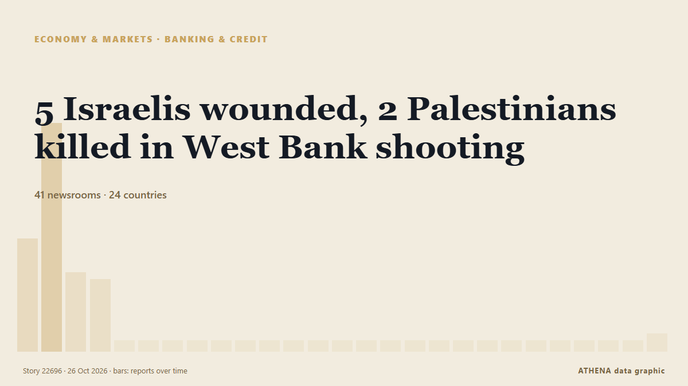

5 Israelis wounded, 2 Palestinians killed in West Bank shooting

The Israeli military reported the killing of two suspected attackers following a shooting incident near the Judea Junction. de Arab News
Informado de forma independiente por 41 medios de 24 países desde el 23 oct; el primero fue Arab News; la cobertura va perdiendo fuerza. ATHENA califica el riesgo como alto (6.2/10), sobre todo por la gravedad del daño descrito y su alcance geográfico y sectorial. La confianza es del 87 % (alta): lo corroboran 41 medios independientes, con una fiabilidad media de las fuentes del 77 %. Medios por país: Estados Unidos (5), China (4), Arabia Saudí (3). Cobertura: del 23 oct al 23 oct, 6 horas.
Por qué importa: Este seguimiento cubre el conflicto que afecta a Israel, Gaza, Cisjordania y Líbano —hechos militares, situación humanitaria y diplomacia— según la prensa de todo el mundo.
Qué ha cambiado: 1 información nueva en las 24 horas hasta el 26 oct.
Primer titular: Israel demolishes homes in West Bank after fatal attack
Los titulares se muestran en inglés, tal como se publicaron.
De un vistazo
Seleccionado, puntuado y redactado por la metodología publicada de ATHENA. Ningún editor interviene en eventos concretos. Cómo se elabora ›
| 23 Oct 05:06 UTC | 15 |
|---|---|
| 23 Oct 08:06 UTC | 32 |
| 23 Oct 11:06 UTC | 10 |
| 23 Oct 14:06 UTC | 9 |
| 23 Oct 17:06 UTC | 0 |
| 23 Oct 20:06 UTC | 0 |
| 23 Oct 23:06 UTC | 0 |
| 24 Oct 02:06 UTC | 0 |
| 24 Oct 05:06 UTC | 0 |
| 24 Oct 08:06 UTC | 0 |
| 24 Oct 11:06 UTC | 0 |
| 24 Oct 14:06 UTC | 0 |
| 24 Oct 17:06 UTC | 0 |
| 24 Oct 20:06 UTC | 0 |
| 24 Oct 23:06 UTC | 0 |
| 25 Oct 02:06 UTC | 0 |
| 25 Oct 05:06 UTC | 0 |
| 25 Oct 08:06 UTC | 0 |
| 25 Oct 11:06 UTC | 0 |
| 25 Oct 14:06 UTC | 0 |
| 25 Oct 17:06 UTC | 0 |
| 25 Oct 20:06 UTC | 0 |
| 25 Oct 23:06 UTC | 0 |
| 26 Oct 02:06 UTC | 0 |
| 26 Oct 05:06 UTC | 0 |
| 26 Oct 08:06 UTC | 0 |
| 26 Oct 11:06 UTC | 1 |
| 23 Oct 06:42 UTC | 5.5 |
|---|---|
| 23 Oct 08:13 UTC | 6.5 |
| 23 Oct 13:05 UTC | 6.6 |
| 23 Oct 14:38 UTC | 7.3 |
| 26 Oct 10:18 UTC | 6.0 |
| 26 Oct 11:44 UTC | 6.2 |
Por qué estas cifras
Importancia
Riesgo
Confianza
La cobertura: quién informó y cuándo
titular tal como se publicó · abre el original- Arab News · Arabia SaudíNetanyahu says extensive West Bank military operation ‘on the way’ after attack kills 2 soldiers
- Shafaq News (English) · IrakTwo gunmen killed in attack on Israeli post near al-Khalil
- Asharq Al-Awsat (English) · Arabia SaudíNetanyahu Orders West Bank Closure as Attack Wounds Israelis before Election
- Haaretz (English) · IsraelElection panel orders Likud to pull signs of Eisenkot bloc party leaders with Arab MKs
- Xinhua (English) — page reader · China5 Israelis wounded, 2 Palestinians killed in West Bank shooting
- APA (English) · AzerbaiyánTwo Israeli soldiers killed in shooting in West Bank - UPDATED
- Sky News (World) · Reino UnidoIsrael orders army to prepare to fully close West Bank after two soldiers killed in shooting
- Türkiye Today · TurquíaNetanyahu says Israel preparing 'full closure' of West Bank in response to attack
- Fox News (World) · Estados UnidosTwo suspected gunmen killed after shooting wounds 5 Israelis in West Bank
- RTÉ News · IrlandaIsrael demolishes homes in West Bank after fatal attack
- Dawn · PakistánWest Bank attack wounds 5 Israelis as Netanyahu cancels events
- ABC News Australia · AustraliaTwo Israeli soldiers killed in attack on West Bank military checkpoint
- DW English · AlemaniaIsrael orders home demolitions after soldiers killed in West Bank
- Xinhua (English) — page reader · ChinaUrgent: Israel's Netanyahu announces "full lockdown" of West Bank after shooting
- Stuff · Nueva ZelandaIsrael orders closure of West Bank after soldiers kill 2 men behind an alleged attack
- Al-Monitor · Estados UnidosNetanyahu orders West Bank closure as attack wounds Israelis before election
- Al-Monitor · Estados UnidosPM warns of major West Bank military operation after attack kills Israeli soldiers
- The Independent · Reino UnidoIsrael orders army to prepare for full closure of West Bank after attack
- France 24 English · FranciaIsrael’s PM Netanyahu vows to ‘destroy’ Hebron after 2 soldiers killed in ‘terrorist attack’
- Luxembourg Times · LuxemburgoIsrael army launches raids in West Bank after shooting wounds at least five
- NBC News (World) · Estados UnidosIsrael orders ‘full lockdown’ of occupied West Bank
- Xinhua (English) — page reader · ChinaIsrael's Netanyahu announces "full lockdown" of West Bank after shooting
- Middle East Eye · INTNetanyahu orders Hebron closure, seeks full West Bank lockdown
- Al Jazeera English · CatarIsraeli military kills two in gun battle in occupied West Bank
- The National · Emiratos Árabes UnidosNetanyahu orders West Bank lockdown after Hebron checkpoint shooting
- Anadolu Agency (English) · TurquíaIsraeli premier orders ‘closure’ of Hebron, ‘full lockdown’ of occupied West Bank
- NDTV · IndiaIsrael Closes West Bank After Military Kills "2 Terrorists" For Shooting
- The New York Times (World) · Estados UnidosPalestinian Gunmen Open Fire on Israelis in the West Bank, Officials Say
- Gulf News · Emiratos Árabes UnidosNetanyahu orders West Bank lockdown after deadly attack days before election
- BBC News · Reino UnidoIsraeli forces begin demolishing Palestinian buildings in Hebron after two Israeli soldiers shot dead
- Mehr News (English) · Irán6 Israeli soldiers wounded in Palestinian op. in West Bank
- Hespress English · MarruecosIsrael army says launches 'offensive counter-terrorism operations' in West Bank
- Middle East Eye · INTIsrael prepares full West Bank lockdown after Hebron shooting
- Stuff · Nueva ZelandaIsrael orders closure of West Bank after soldiers kill 2 Palestinians behind alleged attack
- The Straits Times · SingapurNetanyahu orders West Bank closure as attack wounds five Israelis before election
- SBS News · AustraliaIsrael orders closure of occupied West Bank after two suspected attackers killed
- MyJoyOnline · GhanaFive Israelis wounded and two suspected Palestinian attackers killed in West Bank shooting
- France 24 English · FranciaNetanyahu orders West Bank closure as attack wounds Israelis before election
- Asharq Al-Awsat (English) · Arabia SaudíFar-right Israeli Minister Orders Buildings Demolished in West Bank after Attack
- Xinhua (English) — page reader · ChinaIsraeli forces launch raids in West Bank after shooting